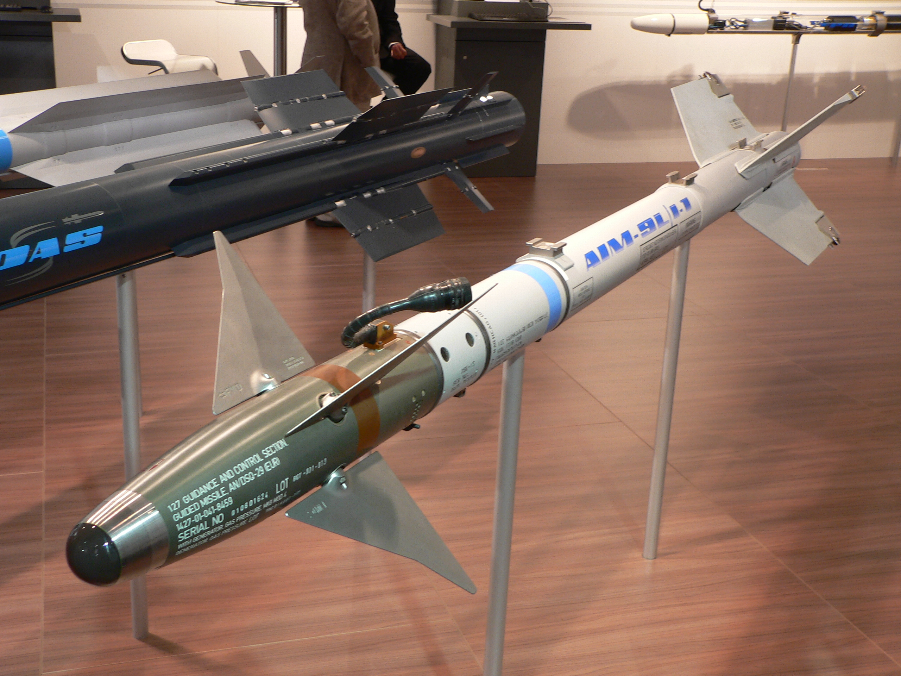

AIM-120 AMRAAM (Advanced Medium-Range Air-to-Air Missile)
Перейти
- AIM-120A: Перша версія ракети, розроблена в середині 1980-х. Використовувалася для враження повітряних цілей на середніх і великих відстанях.
- AIM-120B: Покращена версія, що мала вдосконалений радарний наведення та можливість враження цілей у більш складних умовах.
- AIM-120C: Вдосконалена версія з більш компактним корпусом і кращими характеристиками маневрування. Включала покращену систему наведення.
- AIM-120D: Остання модифікація, яка має дальність понад 180 км і покращену систему навігації.

Модернізації відрізняються за
- Дальністю
- ГСН
- Наведення
- Стійкість до РЕБ
- Маневренність
- Оновленням ПО
AIM-9 Sidewinder
- AIM-9B: Перша версія ракети, розроблена у 1950-х роках, базувалася на інфрачервоному наведені.
- AIM-9C: Версія з покращеними інфрачервоними сенсорами для кращого захоплення цілей в умовах обмеженої видимості.
- AIM-9L: Модифікація з покращеною інфрачервоною головкою самонаведення, здатна вражати цілі на більш великих відстанях.
- AIM-9X: Остання модифікація, що має сучасні можливості, включаючи можливість атакувати цілі в будь-якому напрямку та на дуже малих відстанях.

Модернізації відрізняються за
- Дальністю
- ГСН
- Наведення
- Стійкість до РЕБ
- Маневренність
- Оновленням ПО